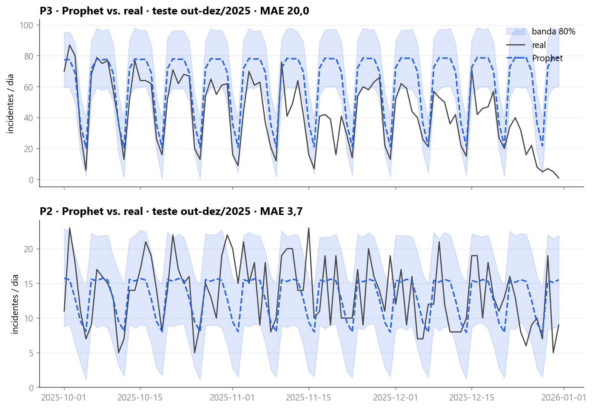
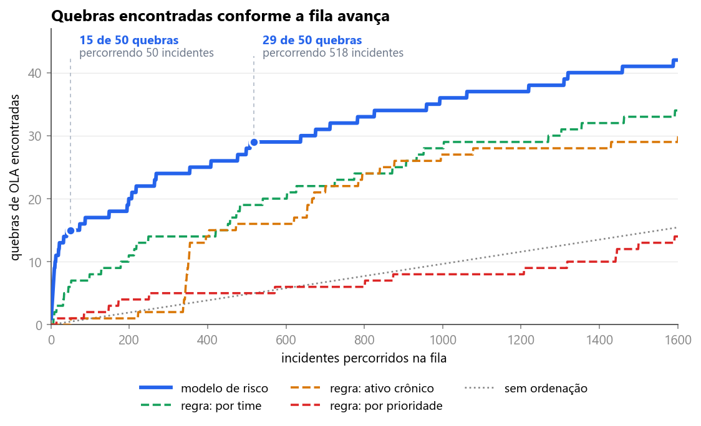
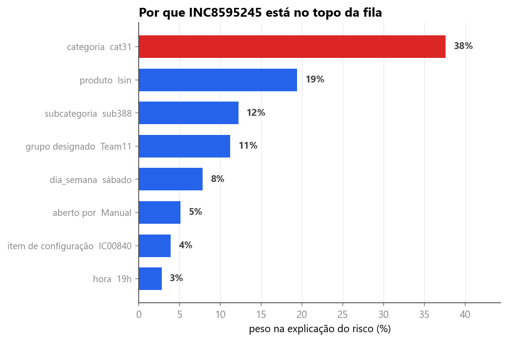

<style>
/* ═══════════════════════════════════════════════════════════════════════════
   VAGA 2 do deck da banca ao vivo · slide 5 · "o modelo funciona, e como
   sabemos". Quatro análises candidatas para a mesma posição, todas com
   data-slide="5". O apresentador percorre com a seta para baixo e escolhe.

     a  .qcb  cobertura do intervalo de previsão no período de teste
     b  .qfl  perdas de prazo encontradas por tamanho da fila de risco
     c  .qal  regressão logística contra XGBoost no mesmo recorte
     d  .qdc  decomposição da pontuação de risco por característica

   Cada análise tem prefixo próprio, então nenhuma disputa regra com outra nem
   com os demais blocos. Os keyframes levam o prefixo no nome porque, depois
   que o _montar.py junta os blocos, o nome do keyframe é global.
   Altura e largura de barra sempre em pixel, via --w e --h no style.
   ═══════════════════════════════════════════════════════════════════════════ */

/* ── comum às quatro: título mais curto que o padrão, para o objeto de dado
      ficar com os 628px de palco que ele precisa ── */
.qcb .tt,.qfl .tt,.qal .tt,.qdc .tt{font-size:38px;letter-spacing:-1.35px;line-height:1.08;
  max-width:1340px}
.qcb .palco,.qfl .palco,.qal .palco,.qdc .palco{flex:1;min-height:0;display:flex;margin-top:18px}
.qcb .fig,.qfl .fig,.qdc .fig{flex-shrink:0;border-radius:20px;padding:22px 24px;
  display:flex;flex-direction:column;justify-content:center}
.qcb .fig img,.qfl .fig img,.qdc .fig img{display:block;border-radius:8px}
.qcb .cap,.qfl .ch,.qal .cap,.qdc .lb{font-size:12px;font-weight:700;letter-spacing:1.7px;
  text-transform:uppercase;color:var(--tx2)}

/* ═════════ a · COBERTURA DO INTERVALO DE PREVISÃO ═════════
   Barra que enche até a cobertura medida, com um fio vertical na cobertura
   nominal de 80%. A da prioridade 2 passa do fio, a da prioridade 3 para
   antes. A faixa medida vira o pedaço hachurado na ponta da barra. */
@keyframes qcb-corre{to{transform:none}}
.qcb .palco{gap:26px}
.qcb .fig{width:893px}
.qcb .fig img{width:845px;height:584px}
.qcb .lado{flex:1;min-width:0;display:flex;flex-direction:column;gap:18px}
.qcb .cob{flex-shrink:0;border-radius:20px;padding:26px 28px 24px}
.qcb .lin{margin-top:22px}
.qcb .lin:first-of-type{margin-top:18px}
.qcb .top{display:flex;align-items:baseline;justify-content:space-between}
.qcb .pr{font-size:17.5px;font-weight:800;letter-spacing:-.3px;color:var(--head)}
.qcb .vl{font-size:27px;font-weight:900;letter-spacing:-1.1px;line-height:1;color:var(--accent);
  font-variant-numeric:tabular-nums}
.qcb .lin.baixa .vl{color:var(--warn)}
.qcb .trw{position:relative;height:30px;margin-top:12px}
.qcb .trk{position:absolute;inset:0;border-radius:8px;background:#EBF0F7;overflow:hidden}
.qcb .trk i{position:absolute;top:0;bottom:0;left:0;width:var(--w);border-radius:8px;
  background:linear-gradient(90deg,#5AA0FB,#2563EB);transform:scaleX(0);transform-origin:left}
.qcb .lin.baixa .trk i{background:linear-gradient(90deg,#E6B455,#B4780A)}
.qcb .trk u{position:absolute;top:0;bottom:0;left:var(--l);width:var(--w);border-radius:0 8px 8px 0;
  background:repeating-linear-gradient(115deg,rgba(37,99,235,.6) 0 3px,rgba(37,99,235,.16) 3px 6px);
  transform:scaleX(0);transform-origin:left}
.qcb .lin.baixa .trk u{background:repeating-linear-gradient(115deg,rgba(180,120,10,.6) 0 3px,
  rgba(180,120,10,.16) 3px 6px)}
.qcb.is-active .trk i,.qcb.is-active .trk u{animation:qcb-corre .9s var(--out) forwards;
  animation-delay:var(--d,0ms)}
.qcb .mk{position:absolute;top:-7px;bottom:-7px;left:398px;width:2px;border-radius:2px;
  background:#0B1220;opacity:.55;transform:scaleY(0);transform-origin:center}
.qcb.is-active .mk{animation:qcb-corre .5s var(--out) forwards;animation-delay:var(--d,0ms)}
.qcb .leg{display:flex;align-items:center;gap:9px;margin-top:20px;font-size:13px;color:var(--tx2)}
.qcb .leg i{width:2px;height:15px;border-radius:2px;background:#0B1220;opacity:.55;flex-shrink:0}
.qcb .nts{flex:1;min-height:0;border-radius:20px;padding:6px 26px;display:flex;
  flex-direction:column}
.qcb .nt{flex:1;display:flex;align-items:center;gap:15px;border-top:1px solid var(--line)}
.qcb .nt:first-child{border-top:0}
.qcb .nt .ci{width:40px;height:40px;border-radius:11px;flex-shrink:0;display:flex;
  align-items:center;justify-content:center;background:var(--accent-l);color:var(--accent)}
.qcb .nt.att .ci{background:var(--warn-l);color:var(--warn)}
.qcb .nt .ci .ic{width:20px;height:20px}
.qcb .nt b{display:block;font-size:16px;font-weight:800;letter-spacing:-.3px;color:var(--head)}
.qcb .nt span{display:block;font-size:13.5px;line-height:1.4;color:var(--tx);margin-top:4px}

/* ═════════ b · PERDAS ENCONTRADAS POR TAMANHO DA FILA ═════════
   A curva à esquerda é a evidência. À direita, o número dos 50 primeiros, a
   mesma fila em três ordenações e o ganho em cada tamanho de fila. */
@keyframes qfl-corre{to{transform:none}}
.qfl .palco{gap:26px}
.qfl .fig{width:1008px}
.qfl .fig img{width:960px;height:584px}
.qfl .lado{flex:1;min-width:0;display:flex;flex-direction:column;gap:16px}
.qfl .hero{flex-shrink:0;background:linear-gradient(160deg,#0B1220,#131C2E);border-radius:20px;
  padding:21px 26px 23px;color:#E8ECF3;box-shadow:0 26px 60px -34px rgba(11,18,32,.7)}
.qfl .hero .hl2{font-size:12px;font-weight:700;letter-spacing:1.7px;text-transform:uppercase;
  color:#7A8494}
.qfl .hero .hv{display:flex;align-items:baseline;gap:11px;margin-top:11px}
.qfl .hero .hv b{font-size:64px;font-weight:900;letter-spacing:-3.4px;line-height:.92;color:#fff;
  font-variant-numeric:tabular-nums}
.qfl .hero .hv i{font-style:normal;font-size:19px;font-weight:700;letter-spacing:-.3px;
  color:#8E97A8}
.qfl .cmp{flex-shrink:0;border-radius:18px;padding:20px 24px 22px}
.qfl .cr{display:flex;align-items:center;gap:12px;margin-top:14px}
.qfl .cr .cn{width:146px;flex-shrink:0;font-size:13.5px;line-height:1.25;color:var(--tx)}
.qfl .cr .cb{position:relative;flex:1;height:22px;border-radius:6px;background:#F0F3F8}
.qfl .cr .cb i{position:absolute;left:0;top:0;bottom:0;width:var(--w);border-radius:6px;
  transform:scaleX(0);transform-origin:left}
.qfl.is-active .cr .cb i{animation:qfl-corre .85s var(--out) forwards;animation-delay:var(--d,0ms)}
.qfl .cr .cv{width:28px;flex-shrink:0;text-align:right;font-size:18px;font-weight:800;
  font-variant-numeric:tabular-nums}
.qfl .cr.mod .cb i{background:linear-gradient(90deg,#3B82F6,#2563EB)}
.qfl .cr.mod .cv{color:var(--accent)}
.qfl .cr.base .cb i{background:#94A3B8}.qfl .cr.base .cv{color:var(--tx2)}
.qfl .cr.pri .cb i{background:#DC2626}.qfl .cr.pri .cv{color:var(--bad)}
.qfl .tabs{flex:1;min-height:0;border-radius:18px;padding:20px 24px 18px;display:flex;
  flex-direction:column}
.qfl .tabs table{width:100%;height:100%;border-collapse:collapse;margin-top:8px;font-size:14.5px}
.qfl .tabs th{font-size:10.5px;font-weight:700;letter-spacing:.7px;text-transform:uppercase;
  color:var(--tx2);text-align:right;padding-bottom:10px}
.qfl .tabs th:first-child{text-align:left}
.qfl .tabs td{text-align:right;border-top:1px solid var(--line);font-variant-numeric:tabular-nums;
  color:var(--tx)}
.qfl .tabs td:first-child{text-align:left}
.qfl .tabs td b{font-size:17px;font-weight:800;color:var(--accent)}
.qfl .tabs td.g{font-weight:800;color:var(--good)}

/* ═════════ c · LOGÍSTICA CONTRA XGBOOST ═════════
   O que decide é a calibração, e ela toma a faixa de cima inteira: a barra do
   XGBoost atravessa o palco, a da logística para no fio das 50 ocorridas.
   Embaixo, as duas métricas de separação. */
@keyframes qal-corre{to{transform:none}}
@keyframes qal-mostra{to{opacity:1}}
.qal .palco{flex-direction:column;gap:22px}
.qal .kal{flex-shrink:0;border-radius:20px;padding:28px 36px 26px;height:336px;display:flex;
  flex-direction:column}
.qal .pistas{position:relative;flex:1;padding-top:10px;display:flex;flex-direction:column;
  justify-content:center;gap:26px}
.qal .ln{position:relative}
.qal .ln .th{display:flex;align-items:baseline;justify-content:space-between;gap:20px}
.qal .ln .nm{font-size:16.5px;font-weight:700;letter-spacing:-.2px;color:var(--head)}
.qal .ln .nm em{font-style:normal;font-weight:500;color:var(--tx2)}
.qal .ln .vv{font-size:42px;font-weight:900;letter-spacing:-1.9px;line-height:1;
  font-variant-numeric:tabular-nums}
.qal .ln.ok .vv{color:var(--good)}
.qal .ln.no .vv{color:var(--bad)}
.qal .trk{position:relative;height:34px;margin-top:11px;border-radius:9px;background:#EBF0F7}
.qal .trk i{position:absolute;left:0;top:0;bottom:0;width:var(--w);border-radius:9px;
  transform:scaleX(0);transform-origin:left}
.qal .ln.ok .trk i{background:linear-gradient(90deg,#3CBE7C,#15A05B)}
.qal .ln.no .trk i{background:linear-gradient(90deg,#F87171,#DC2626)}
.qal.is-active .trk i{animation:qal-corre 1s var(--out) forwards;animation-delay:var(--d,0ms)}
.qal .mk{position:absolute;left:70px;top:30px;bottom:-8px;width:2px;border-radius:2px;
  background:#0B1220;opacity:.6;transform:scaleY(0);transform-origin:top}
.qal.is-active .mk{animation:qal-corre .6s var(--out) forwards;animation-delay:var(--d,0ms)}
.qal .mkl{position:absolute;left:84px;top:24px;opacity:0;font-size:12px;font-weight:700;
  letter-spacing:1.4px;text-transform:uppercase;color:var(--head)}
.qal.is-active .mkl{animation:qal-mostra .5s var(--out) forwards;animation-delay:var(--d,0ms)}
.qal .esc{flex-shrink:0;margin-top:18px;font-size:13px;color:var(--tx2)}
.qal .duo{flex:1;min-height:0;display:flex;gap:26px}
.qal .mc{flex:1;min-width:0;position:relative;overflow:hidden;border-radius:20px;
  padding:24px 30px 22px;display:flex;flex-direction:column;justify-content:space-between}
.qal .mc .gh{position:absolute;right:24px;top:8px;font-size:82px;font-weight:900;
  letter-spacing:-4px;line-height:1;color:#EDF1F8;font-variant-numeric:tabular-nums}
.qal .mc .mt2{position:relative;font-size:12px;font-weight:700;letter-spacing:1.7px;
  text-transform:uppercase;color:var(--tx2)}
.qal .mc .mt2 em{font-style:normal;display:block;letter-spacing:1.1px;color:#94A0B2;margin-top:6px}
.qal .mc .par{position:relative;display:flex;align-items:flex-end;gap:44px}
.qal .mc .it{min-width:0}
.qal .mc .it .nm{display:block;font-size:13.5px;line-height:1.3;color:var(--tx2)}
.qal .mc .it .vl{display:block;font-size:44px;font-weight:900;letter-spacing:-2.1px;line-height:1;
  margin-top:6px;color:var(--tx2);font-variant-numeric:tabular-nums}
.qal .mc .it.win .vl{color:var(--accent)}
.qal .mc .vd{position:relative;align-self:flex-start;display:inline-flex;align-items:center;
  gap:8px;font-size:13px;font-weight:700;padding:7px 14px;border-radius:999px}
.qal .mc .vd .ic{width:15px;height:15px;stroke-width:2.2}
.qal .mc .vd.ctx{background:#EEF2F7;color:var(--tx2)}
.qal .mc .vd.foc{background:var(--accent-l);color:var(--accent)}

/* ═════════ d · DECOMPOSIÇÃO DA PONTUAÇÃO ═════════
   A figura à esquerda é a prova de que as parcelas somam a pontuação. À
   direita, a mesma decomposição como o painel a mostra para quem opera. */
@keyframes qdc-corre{to{transform:none}}
.qdc .palco{gap:26px}
.qdc .fig{width:872px;justify-content:flex-start}
.qdc .fig img{width:824px;height:556px}
.qdc .fig .ff{font-size:14.5px;line-height:1.4;color:var(--tx);margin-top:12px}
.qdc .fig .ff b{font-weight:700;color:var(--head)}
.qdc .lado{flex:1;min-width:0;display:flex}
.qdc .tela{width:100%;border-radius:20px;padding:26px 30px;color:#E8ECF3;
  background:linear-gradient(160deg,#0B1220,#131C2E);
  box-shadow:0 26px 60px -34px rgba(11,18,32,.7);display:flex;flex-direction:column;
  justify-content:space-between}
.qdc .tela .sh{display:flex;align-items:center;gap:9px;font-size:11.5px;font-weight:700;
  letter-spacing:1.8px;text-transform:uppercase;color:#7A8494}
.qdc .tela .sh em{font-style:normal;width:6px;height:6px;border-radius:50%;background:#4ADE80;
  box-shadow:0 0 8px #4ADE80;flex-shrink:0}
.qdc .inc{display:flex;align-items:center;gap:11px;font-size:26px;font-weight:800;
  letter-spacing:-.6px;color:#fff}
.qdc .inc span{font-size:11px;font-weight:800;letter-spacing:1px;padding:5px 10px;border-radius:7px;
  background:rgba(220,38,38,.2);color:#F87171}
.qdc .regua{position:relative;height:34px;border-radius:9px;background:rgba(255,255,255,.07)}
.qdc .regua i{position:absolute;left:0;top:0;bottom:0;width:var(--w);border-radius:9px;
  background:linear-gradient(90deg,#F87171,#DC2626);transform:scaleX(0);transform-origin:left}
.qdc.is-active .regua i{animation:qdc-corre .95s var(--out) forwards;animation-delay:var(--d,0ms)}
.qdc .regua u{position:absolute;top:-4px;bottom:-4px;left:1.7%;width:2px;background:#93C5FD}
.qdc .rlbl{display:flex;justify-content:space-between;font-size:13px;color:#7A8494;margin-top:10px}
.qdc .rlbl b{color:#93C5FD;font-weight:700;font-variant-numeric:tabular-nums}
.qdc .ev{border-radius:13px;padding:17px 19px;background:rgba(255,255,255,.05)}
.qdc .ev .el{font-size:11px;font-weight:700;letter-spacing:1.2px;text-transform:uppercase;
  color:#7A8494}
.qdc .ev .et{font-size:17px;line-height:1.45;color:#E8ECF3;margin-top:9px}
.qdc .ev .et b{font-weight:800;color:#fff;font-variant-numeric:tabular-nums}
.qdc .lb{color:#7A8494}
.qdc .mot{display:flex;flex-direction:column;gap:15px;margin-top:16px}
.qdc .mr{display:flex;align-items:center;gap:12px;font-size:14px;color:#B8C0CE}
.qdc .mr .mn{width:186px;flex-shrink:0}
.qdc .mr .mb{position:relative;flex:1;height:7px;border-radius:4px;background:rgba(255,255,255,.08)}
.qdc .mr .mb i{position:absolute;left:0;top:0;bottom:0;width:var(--w);border-radius:4px;
  background:#3B82F6;transform:scaleX(0);transform-origin:left}
.qdc.is-active .mr .mb i{animation:qdc-corre .8s var(--out) forwards;animation-delay:var(--d,0ms)}
.qdc .mr .mv{width:36px;flex-shrink:0;text-align:right;font-weight:800;color:#fff;
  font-variant-numeric:tabular-nums}
</style>

<!-- ═══════════ 5 · VAGA 2 · a · COBERTURA DO INTERVALO ═══════════ -->
<section class="slide light qcb" data-slide="5" data-var="a" data-quem="ana">
  <div class="mesh"></div><div class="grid-bg"></div>
  <div class="hd">
    <div class="bi"><svg viewBox="0 0 28 28" fill="none"><path d="M6 22L12 14L16 17L22 8" stroke="#fff" stroke-width="2.2" stroke-linecap="round" stroke-linejoin="round"/><circle cx="22" cy="8" r="3" stroke="#3B82F6" stroke-width="1.5"/><circle cx="22" cy="8" r="1.2" fill="#3B82F6"/></svg></div>
    <div class="bn">Cronos</div><span class="bt">BANCA FINAL · 15/09/2026</span>
    <div class="tag">Prophet · Período de teste</div>
  </div>
  <div class="body">
    <span class="eb"><span class="rv" style="--d:260ms">Avaliação do modelo</span></span>
    <h1 class="tt">
      <span class="mask" style="--d:340ms"><span>O intervalo de previsão cobre de 86% a 88% dos dias</span></span>
      <span class="mask" style="--d:440ms"><span>na <span class="hl">prioridade 2</span> e de 59% a 61% na <span class="hl">prioridade 3</span>.</span></span>
    </h1>

    <div class="palco">
      <div class="cartao fig rv3" style="--d:620ms">
        
      </div>

      <div class="lado">
        <div class="cartao cob rv3" style="--d:760ms">
          <div class="cap rv" style="--d:1000ms">Cobertura medida no trimestre de teste</div>

          <div class="lin rv" style="--d:1080ms">
            <div class="top">
              <span class="pr">Prioridade 2</span>
              <span class="vl num">86% a 88%</span>
            </div>
            <div class="trw">
              <div class="trk">
                <i style="--w:427px;--d:1200ms"></i>
                <u style="--l:427px;--w:10px;--d:1900ms"></u>
              </div>
              <div class="mk" style="--d:1700ms"></div>
            </div>
          </div>

          <div class="lin baixa rv" style="--d:1180ms">
            <div class="top">
              <span class="pr">Prioridade 3</span>
              <span class="vl num">59% a 61%</span>
            </div>
            <div class="trw">
              <div class="trk">
                <i style="--w:293px;--d:1300ms"></i>
                <u style="--l:293px;--w:10px;--d:2000ms"></u>
              </div>
              <div class="mk" style="--d:1780ms"></div>
            </div>
          </div>

          <div class="leg rv" style="--d:2060ms">
            <i></i>o fio marca a cobertura nominal de 80%
          </div>
        </div>

        <div class="cartao nts rv3" style="--d:900ms">
          <div class="nt rv" style="--d:2180ms">
            <span class="ci"><svg class="ic" viewBox="0 0 24 24"><path d="M4 15.6c3.4 0 4.6-7.2 8-7.2s4.6 7.2 8 7.2"/><path d="M4 20.4h16"/></svg></span>
            <div>
              <b>Previsão em faixa, não em ponto</b>
              <span>quem opera dimensiona o dia pelo limite superior do intervalo</span>
            </div>
          </div>
          <div class="nt att rv" style="--d:2280ms">
            <span class="ci"><svg class="ic" viewBox="0 0 24 24"><path d="M12 4.2 21 19.4H3z"/><path d="M12 9.6v4.4M12 16.6h.01"/></svg></span>
            <div>
              <b>A faixa da prioridade 3 é estreita</b>
              <span>cobre menos dias do que os 80% de referência no trimestre final</span>
            </div>
          </div>
          <div class="nt rv" style="--d:2380ms">
            <span class="ci"><svg class="ic" viewBox="0 0 24 24"><rect x="3.2" y="4.8" width="17.6" height="15.6" rx="2.6"/><path d="M3.2 9.6h17.6M8.2 2.6v4.2M15.8 2.6v4.2"/></svg></span>
            <div>
              <b>A queda de dezembro fica de fora</b>
              <span>antecipá-la exige padrão anual, e o treino tem um ano de histórico</span>
            </div>
          </div>
        </div>
      </div>
    </div>
  </div>
  <div class="ft"><span>Prophet · teste de out a dez de 2025 · o MAE da figura é de ajuste único no trimestre; o erro de D+1 a D+7 vem do backtest deslizante</span></div>
</section>

<!-- ═══════════ 5 · VAGA 2 · b · A FILA DE RISCO ═══════════ -->
<section class="slide light qfl" data-slide="5" data-var="b" data-quem="ana">
  <div class="mesh"></div><div class="grid-bg"></div>
  <div class="hd">
    <div class="bi"><svg viewBox="0 0 28 28" fill="none"><path d="M6 22L12 14L16 17L22 8" stroke="#fff" stroke-width="2.2" stroke-linecap="round" stroke-linejoin="round"/><circle cx="22" cy="8" r="3" stroke="#3B82F6" stroke-width="1.5"/><circle cx="22" cy="8" r="1.2" fill="#3B82F6"/></svg></div>
    <div class="bn">Cronos</div><span class="bt">BANCA FINAL · 15/09/2026</span>
    <div class="tag">Fila de risco · Avaliação</div>
  </div>
  <div class="body">
    <span class="eb"><span class="rv" style="--d:260ms">Avaliação do modelo</span></span>
    <h1 class="tt">
      <span class="mask" style="--d:340ms"><span>A fila de risco encontra <span class="hl">15 das 50 perdas de prazo</span></span></span>
      <span class="mask" style="--d:440ms"><span>nos 50 primeiros incidentes.</span></span>
    </h1>

    <div class="palco">
      <div class="cartao fig rv3" style="--d:620ms">
        
      </div>

      <div class="lado">
        <div class="hero rv3" style="--d:760ms">
          <div class="hl2 rv" style="--d:1000ms">Percorrendo 50 incidentes</div>
          <div class="hv rv" style="--d:1060ms">
            <b class="ct" data-to="15" data-delay="1120">0</b>
            <i>de 50 perdas de prazo</i>
          </div>
        </div>

        <div class="cartao cmp rv3" style="--d:860ms">
          <div class="ch rv" style="--d:1240ms">A mesma fila, ordenada de outro jeito</div>
          <div class="cr mod rv" style="--d:1320ms">
            <span class="cn">Modelo de risco</span>
            <span class="cb"><i style="--w:190px;--d:1420ms"></i></span>
            <span class="cv"><span class="ct" data-to="15" data-delay="1460">0</span></span>
          </div>
          <div class="cr base rv" style="--d:1400ms">
            <span class="cn">Melhor regra simples</span>
            <span class="cb"><i style="--w:76px;--d:1500ms"></i></span>
            <span class="cv"><span class="ct" data-to="6" data-delay="1540">0</span></span>
          </div>
          <div class="cr pri rv" style="--d:1480ms">
            <span class="cn">Ordenada por prioridade</span>
            <span class="cb"><i style="--w:13px;--d:1580ms"></i></span>
            <span class="cv"><span class="ct" data-to="1" data-delay="1620">0</span></span>
          </div>
        </div>

        <div class="cartao tabs rv3" style="--d:960ms">
          <div class="ch rv" style="--d:1700ms">Perdas encontradas em cada tamanho de fila</div>
          <table>
            <tr class="rv" style="--d:1780ms"><th>Percorrendo</th><th>Modelo</th><th>Melhor regra</th><th>Ganho</th></tr>
            <tr class="rv" style="--d:1860ms"><td>50 incidentes</td><td><b>15</b></td><td>6</td><td class="g">+150%</td></tr>
            <tr class="rv" style="--d:1940ms"><td>100 incidentes</td><td><b>17</b></td><td>8</td><td class="g">+112%</td></tr>
            <tr class="rv" style="--d:2020ms"><td>518 incidentes</td><td><b>29</b></td><td>19</td><td class="g">+53%</td></tr>
            <tr class="rv" style="--d:2100ms"><td>1.000 incidentes</td><td><b>36</b></td><td>28</td><td class="g">+29%</td></tr>
          </table>
        </div>
      </div>
    </div>
  </div>
  <div class="ft"><span>Risco de OLA · avaliação fora do período de treino · 50 perdas de prazo no recorte</span></div>
</section>

<!-- ═══════════ 5 · VAGA 2 · c · O ALGORITMO ESCOLHIDO ═══════════ -->
<section class="slide light qal" data-slide="5" data-var="c" data-quem="ana">
  <div class="mesh"></div><div class="grid-bg"></div>
  <div class="hd">
    <div class="bi"><svg viewBox="0 0 28 28" fill="none"><path d="M6 22L12 14L16 17L22 8" stroke="#fff" stroke-width="2.2" stroke-linecap="round" stroke-linejoin="round"/><circle cx="22" cy="8" r="3" stroke="#3B82F6" stroke-width="1.5"/><circle cx="22" cy="8" r="1.2" fill="#3B82F6"/></svg></div>
    <div class="bn">Cronos</div><span class="bt">BANCA FINAL · 15/09/2026</span>
    <div class="tag">Escolha do algoritmo</div>
  </div>
  <div class="body">
    <span class="eb"><span class="rv" style="--d:260ms">Avaliação do modelo</span></span>
    <h1 class="tt">
      <span class="mask" style="--d:340ms"><span>Onde houve 50 perdas de prazo, a regressão logística</span></span>
      <span class="mask" style="--d:440ms"><span>prevê <span class="hl">48,1</span> e o XGBoost prevê <span class="bd">1.007</span>.</span></span>
    </h1>

    <div class="palco">
      <div class="cartao kal rv3" style="--d:620ms">
        <div class="cap rv" style="--d:900ms">Perdas de prazo previstas no recorte de avaliação</div>
        <div class="pistas">
          <div class="ln ok">
            <div class="th rv" style="--d:1000ms">
              <span class="nm">Regressão logística</span>
              <span class="vv"><span class="ct" data-to="48,1" data-dec="1" data-delay="1120">0,0</span></span>
            </div>
            <div class="trk"><i style="--w:67px;--d:1100ms"></i></div>
          </div>
          <div class="ln no">
            <div class="th rv" style="--d:1240ms">
              <span class="nm">XGBoost <em>com peso na classe rara</em></span>
              <span class="vv">1.007</span>
            </div>
            <div class="trk"><i style="--w:1400px;--d:1340ms"></i></div>
          </div>
          <div class="mk" style="--d:1860ms"></div>
          <div class="mkl" style="--d:2000ms">50 ocorridas</div>
        </div>
        <div class="esc rv" style="--d:2100ms">O eixo das duas barras vai de zero a 1.007 perdas de prazo.</div>
      </div>

      <div class="duo">
        <div class="cartao mc rv3" style="--d:1500ms">
          <span class="gh">01</span>
          <div class="mt2 rv" style="--d:1740ms">ROC AUC<em>separação entre quem perde e quem cumpre o prazo</em></div>
          <div class="par">
            <span class="it win rv" style="--d:1840ms">
              <span class="nm">Regressão logística</span>
              <span class="vl"><span class="ct" data-to="0,8693" data-dec="4" data-delay="1900">0,0000</span></span>
            </span>
            <span class="it rv" style="--d:1920ms">
              <span class="nm">XGBoost padrão</span>
              <span class="vl"><span class="ct" data-to="0,8679" data-dec="4" data-delay="1980">0,0000</span></span>
            </span>
          </div>
          <span class="vd ctx rv" style="--d:2060ms">
            <svg class="ic" viewBox="0 0 24 24"><path d="M4.5 9h15M4.5 15h15"/></svg>
            Empate
          </span>
        </div>

        <div class="cartao mc rv3" style="--d:1600ms">
          <span class="gh">02</span>
          <div class="mt2 rv" style="--d:1840ms">PR-AUC<em>a métrica que vale para evento raro</em></div>
          <div class="par">
            <span class="it win rv" style="--d:1940ms">
              <span class="nm">Regressão logística</span>
              <span class="vl"><span class="ct" data-to="0,2958" data-dec="4" data-delay="2000">0,0000</span></span>
            </span>
            <span class="it rv" style="--d:2020ms">
              <span class="nm">XGBoost padrão</span>
              <span class="vl"><span class="ct" data-to="0,2526" data-dec="4" data-delay="2080">0,0000</span></span>
            </span>
          </div>
          <span class="vd foc rv" style="--d:2160ms">
            <svg class="ic" viewBox="0 0 24 24"><path d="M5 18.5 12 7.5l7 11z"/></svg>
            17% acima, para a logística
          </span>
        </div>
      </div>
    </div>
  </div>
  <div class="ft"><span>Mesmo recorte de avaliação · 50 perdas de prazo ocorridas · XGBoost padrão nas AUC e com peso na classe rara na calibração</span></div>
</section>

<!-- ═══════════ 5 · VAGA 2 · d · A PONTUAÇÃO DECOMPOSTA ═══════════ -->
<section class="slide light qdc" data-slide="5" data-var="d" data-quem="ana">
  <div class="mesh"></div><div class="grid-bg"></div>
  <div class="hd">
    <div class="bi"><svg viewBox="0 0 28 28" fill="none"><path d="M6 22L12 14L16 17L22 8" stroke="#fff" stroke-width="2.2" stroke-linecap="round" stroke-linejoin="round"/><circle cx="22" cy="8" r="3" stroke="#3B82F6" stroke-width="1.5"/><circle cx="22" cy="8" r="1.2" fill="#3B82F6"/></svg></div>
    <div class="bn">Cronos</div><span class="bt">BANCA FINAL · 15/09/2026</span>
    <div class="tag">Explicabilidade</div>
  </div>
  <div class="body">
    <span class="eb"><span class="rv" style="--d:260ms">Avaliação do modelo</span></span>
    <h1 class="tt">
      <span class="mask" style="--d:340ms"><span>O risco de <span class="hl">56,1%</span> do INC8595245 se decompõe</span></span>
      <span class="mask" style="--d:440ms"><span>nas parcelas que o produziram.</span></span>
    </h1>

    <div class="palco">
      <div class="cartao fig rv3" style="--d:620ms">
        
        <p class="ff rv" style="--d:1500ms">As parcelas somam <b>exatamente</b> o risco que o modelo calculou.</p>
      </div>

      <div class="lado">
        <div class="tela rv3" style="--d:760ms">
          <div class="sh rv" style="--d:1000ms"><em></em>Tela de detalhe do incidente</div>
          <div class="inc rv" style="--d:1080ms">INC8595245 <span>RISCO ALTO</span></div>
          <div>
            <div class="regua"><i style="--w:56%;--d:1200ms"></i><u></u></div>
            <div class="rlbl rv" style="--d:1900ms">
              <span>média da base <b>0,97%</b></span>
              <span>risco estimado <b><span class="ct" data-to="56,1" data-dec="1" data-delay="1300">0,0</span>%</b></span>
            </div>
          </div>
          <div class="ev rv" style="--d:1420ms">
            <div class="el">O que já aconteceu com casos iguais</div>
            <div class="et">Dos <b>66</b> incidentes deste ativo, <b>21</b> perderam o prazo.</div>
          </div>
          <div>
            <div class="lb rv" style="--d:1580ms">Peso de cada parcela na pontuação</div>
            <div class="mot">
              <div class="mr rv" style="--d:1660ms"><span class="mn">categoria cat31</span><span class="mb"><i style="--w:100%;--d:1740ms"></i></span><span class="mv">38%</span></div>
              <div class="mr rv" style="--d:1720ms"><span class="mn">produto lsin</span><span class="mb"><i style="--w:50%;--d:1800ms"></i></span><span class="mv">19%</span></div>
              <div class="mr rv" style="--d:1780ms"><span class="mn">subcategoria sub388</span><span class="mb"><i style="--w:32%;--d:1860ms"></i></span><span class="mv">12%</span></div>
              <div class="mr rv" style="--d:1840ms"><span class="mn">grupo designado Team11</span><span class="mb"><i style="--w:29%;--d:1920ms"></i></span><span class="mv">11%</span></div>
              <div class="mr rv" style="--d:1900ms"><span class="mn">aberto no sábado</span><span class="mb"><i style="--w:21%;--d:1980ms"></i></span><span class="mv">8%</span></div>
            </div>
          </div>
        </div>
      </div>
    </div>
  </div>
  <div class="ft"><span>Regressão logística · incidente real da base elegível · as parcelas somam a pontuação calculada</span></div>
</section>
